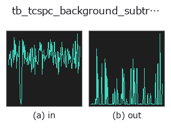

typed op• 数据种类:counts → counts
• 调用:fullseye.apply(img, "tb_tcspc_background_subtract", a=0.5, b=0.5)(2-D 的模型是一张图 + 两个标量旋钮 a,b∈[0,1])

*图为在 128×128 合成输入上实际运行的输出。左为输入，右为输出。点云以俯视散点显示(亮度 = z)，一维序列为折线，体数据为沿 z 的最大值投影，视频为中间帧，复数图像为幅值；无法成像的返回值直接显示数值。*
*旋钮 a 不改变输出(实测: 0.1 / 0.5 / 0.9 相同)。*
扫描旋钮 b(0.1 / 0.5 / 0.9，另一旋钮取默认):
▸ tb_tcspc_background_subtract: knob b sweep (docs site)
阶段(前置算子 → 本算子，从左到右):
▸ tb_tcspc_background_subtract: stages (docs site)
换别的图像(合成场景 / 照片 / 硬币。上排为输入，下排为对应输出。旋钮取默认):
▸ tb_tcspc_background_subtract: other inputs (docs site)
从到达时间直方图中去除环境光/暗计数本底。
> 以下的详细说明为原文 —— 摘要与标题已翻译。
Outdoors, most of what a dToF sensor counts is sunlight: a roughly uniform
pedestal under the return pulse. It biases the centroid toward the middle of
the window (a floor of `b` per bin pulls the first moment toward
`window/2`) and it inflates the apparent signal, so it is removed before
any depth or lifetime estimate.
The level is estimated by *method* and then subtracted (the sign trap:
the result is `hist - level, clipped at 0, never hist + level`):
• `"median"` (default) — the median of every bin. Robust while the pulse
occupies well under half the window, which is the normal dToF case.
• `"leading"` — the mean of the first *leading_bins* bins, the classical
choice when the pulse is known to arrive late (a far target).
• `"trailing"` — the mean of the last *leading_bins* bins, for
fluorescence decays where the tail is background.
• `"quantile"` — the given *quantile* of all bins, for tuning by hand.
*leading_bins* defaults to `None = min(8, len(hist))`, so the default
call works on a short histogram instead of raising over a constant nobody
chose (a fixed default of 8 made `method="leading"` fail on any histogram
with fewer than 8 bins).
*scale* multiplies the estimated level before subtraction (`scale=1.2` for
a deliberately aggressive removal). Clipping at 0 means the result is a valid
non-negative histogram that the rest of this module will accept.
Ground truth: on a noiseless histogram with a known flat pedestal of 20
counts/bin under a 5000-photon pulse covering 5.1% of the window, the median
estimate recovers 20.000000 and the returned histogram equals the pedestal-
free pulse exactly (measured area error 0.0, pinned in the tests).
Returns a float64 1-D histogram of the same length as *hist*.
Raises `ValueError`: negative, non-finite or non-1-D *hist*, an unknown
*method*, a *leading_bins* outside `[1, len(hist)]`, a *quantile* outside
`[0, 1]`, and a negative *scale*.
Typed bridge of the photon op `tcspc_background_subtract into the 2-D evolution registry: the same implementation, called under the op(v, a, b) convention. a drives quantile (default 0.5) and b drives scale` (default 1).
• 示例数据目录(下载 URL / 许可证) —— 2-D 用 skimage.data(BSD/公有领域)加合成图,3-D 给出真实数据源(Stanford/PDS 等)的下载 URL。
• 算子来历与参考文献 —— 该算子族所依据的研究/方法出处。
下面的程序已确认可以运行(与图相同的输入)。在 Studio 帮助中，此块会变成按钮，可当场加载并运行。
img_to_counts 0.50 0.50 tb_tcspc_background_subtract 0.50 0.50
▸ Load this pipeline · Load & run
下面的示例调用的是底层账本算子 tcspc_background_subtract。此桥接算子只是把同一实现适配为 fn(v, a, b) 约定，行为完全相同(只是调用形式不同)。
• photon_timeresolved — py -3.11 examples/photon_timeresolved.py
• poc_dtof_ranging — py -3.11 examples/poc_dtof_ranging.py
counts 作为输入)identity · tb_spad_deadtime_apply · tb_spad_deadtime_correct · tb_tcspc_coates_correct · tb_tcspc_irf_convolve · tb_dtof_depth · tb_countrate_to_counts · tb_counts_to_countrate
typed)tb_points_to_voxel · tb_estimate_point_normals · tb_iss_keypoints · tb_angle_3points · tb_project_points · tb_render_point_depth · tb_statistical_outlier_removal · tb_radius_outlier_removal
*Provenance: ops.py — 2D 算子登记表。本条目由 tools/opdocs.py md 自动生成(请勿手工编辑)。*
© 2026 Kazufumi Furuse — Fullseye operator documentation. Licensed under Apache-2.0.
{kind=link}
{kind=link}
{kind=link}